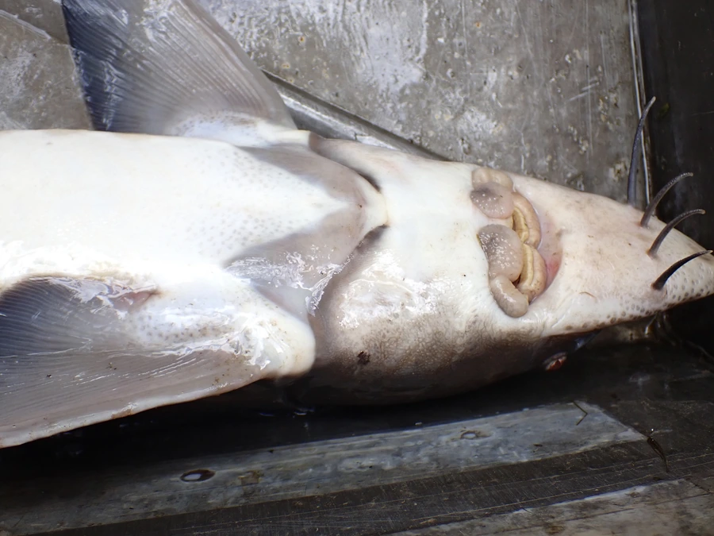

鱼类 · 动物界
西伯利亚鲟 Acipenser baerii

分布在西伯利亚大河与贝加尔湖的淡水鲟鱼，耐寒且生长缓慢，是鲟鱼养殖和杂交育种的重要养殖亲本。
- 分类
- 门脊索动物门纲辐鳍鱼纲目鲟形目科鲟科属鲟属
- 栖息环境
- 西伯利亚的大河、湖泊和水库，冬季在深水区越冬
- 地理分布
- 俄罗斯西伯利亚各大河流与贝加尔湖，中国新疆额尔齐斯河有分布
- 保护级别
- IUCN 濒危（EN）；《濒危野生动植物种国际贸易公约》附录Ⅱ
物种志
西伯利亚鲟体呈长纺锤形，吻部较短而圆钝，口下位，前方有 4 根触须。体表覆盖 5 列骨板，体色多为灰褐、黄褐或深褐色，腹部浅黄。成鱼体长一般 1–1.5 m，最大可达 2 m，体重 20–60 kg；不同水域的种群在体型和生长速度上差异明显。
西伯利亚鲟主要分布在俄罗斯西伯利亚的鄂毕河、叶尼塞河、勒拿河等大河，以及贝加尔湖等湖泊，中国新疆额尔齐斯河也有分布。它耐低温，冬季在深水区越冬，以底栖昆虫幼虫、甲壳类和小鱼为食，生长缓慢，性成熟需 10 年以上。由于过度捕捞、水坝建设和水污染，野生种群持续下降，IUCN 将其列为濒危。西伯利亚鲟适应性强、易于养殖，是鲟鱼养殖和杂交育种的重要亲本，中国已引进养殖。
形态与习性
- 食性底栖昆虫幼虫、甲壳类和小鱼
- 体长一般 1–1.5 m，最大可达 2 m
- 体重一般 20–60 kg
- 寿命可达 50 年以上
- 繁殖性成熟需 10 年以上，在砾石底河段产卵
- 耐寒性耐低温，冬季在深水区越冬
趣味知识
- 西伯利亚鲟是分布最靠北的鲟鱼之一，能在冰封的河流中越冬。
- 它生长缓慢，性成熟往往需要 10 年以上。
- 西伯利亚鲟适应性强，是鲟鱼养殖和杂交育种的重要亲本。